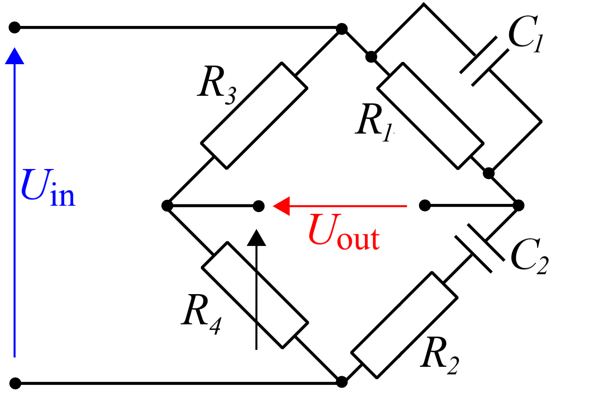

Fig. 1.
Y23 (2023) — English translation
Rice. 1 --- Equipment
Equipment: sound generator; oscilloscope; multimeter in ohmmeter mode; four resistors; capacitor of known capacity $C_0=100~нФ$; 7 capacitors of unknown capacity, numbered in ascending order; rheostat; diode; transformer; BNC-BNC cable $\times2$; BNC to board adapter; development board $\times2$.
A Wien bridge is a four-terminal linear element whose behavior depends significantly on the frequency $f$ of the input signal. The Wien Bridge diagram is shown in the figure below. The two most common applications of the Wien bridge are capacitance measurement and frequency filtering of signals. Each of them will be discussed in this task.
The two most common applications of the Wien bridge are capacitance measurement and frequency filtering of signals. Each of them will be discussed in this task.
Rice. 2 --- Bridge of Wine

Let us assume that the capacitance of one of the capacitors (for example, $C_2$) and the resistance of all resistors are known; You can also adjust the resistance $R_4$ and frequency $f$ of the input signal. Then, for some values of $f$ and $R_4$, the amplitude of the output signal $U_{\rm{out}}$ becomes equal to zero (the bridge is balanced). This can be used to determine the capacity $C_1$.
Note: Since the “ground” of the generator and the oscilloscope are common, when connecting devices directly to the circuit, one of the Wien bridge components will actually be excluded from the circuit (its two terminals will have the same potential). To solve this problem you need to use a transformer. One of its windings must be connected to the Wien bridge, and data must be taken from the second winding on an oscilloscope.
Note: Only plug the transformer into a small breadboard, since its legs can damage the contacts of a large one!
Next, we will consider a Wien bridge in which $C_1=C_2$, $R_1=R_2$ and $R_4=2R_3$. Let us first examine such an important characteristic as the transfer function of the bridge $H(f)\equiv\left|\dfrac{U_\text{out}}{U_\text{in}}\right|$, where $U_\text{out}$ and $U_\text{in}$ are the complex amplitudes of the input and output signals, and $f$ is the frequency of the input signal.
If a sinusoidal voltage with frequency $f$ is applied to an arbitrary nonlinear element, the output is a signal that is the sum of sinusoidal signals with frequencies $nf$, $n\in\mathbb N$ (and, perhaps, a constant component). The component with $n=1$ is called the carrier, and the components with $n\ge2$ are called higher harmonics. To take into account nonlinear effects, knowledge of the total amplitude of higher harmonics can be useful. To measure it, you can use the characteristic feature of the Wien bridge transfer function. As a nonlinear element, it is proposed to use a series-connected diode and a resistor with the lowest value (the voltage is proposed to be applied to both elements and removed from the diode).
To take into account nonlinear effects, knowledge of the total amplitude of higher harmonics can be useful. To measure it, you can use the characteristic feature of the Wien bridge transfer function. As a nonlinear element, it is proposed to use a series-connected diode and a resistor with the lowest value (the voltage is proposed to be applied to both elements and removed from the diode).
Hint: You can assume that the transfer function of the Wien bridge reaches a constant fairly quickly. Please note that the transformer transfer function is not necessarily equal to $1$!
Source: https://pho.rs/p/3471